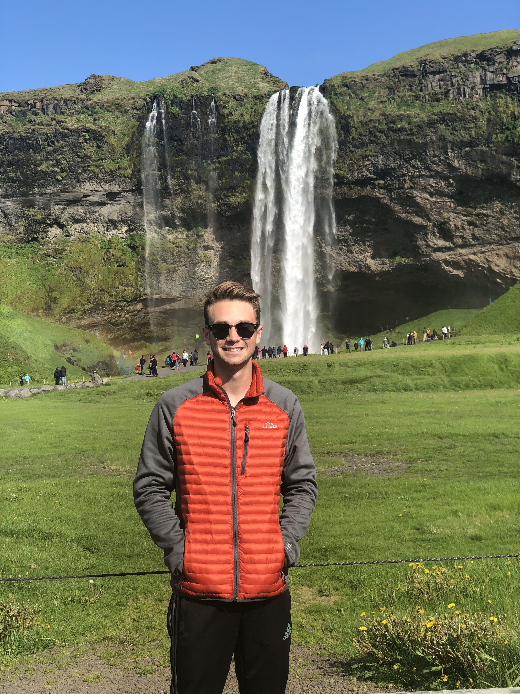

Owner

About The Owner
Rosie is owned by Dylan Oliver, a freshman at the University of Maine.
Dylan is a Management Major with a concentration in Entrepreneurship.
In his free time, besides looking after Rosie, he is a member of the MBS Corps at UMaine and enjoys playing and watching soccer.
Dylan also enjoys hiking and traveling and has traveled abroad to four European countries, most recently Iceland in June, 2018.